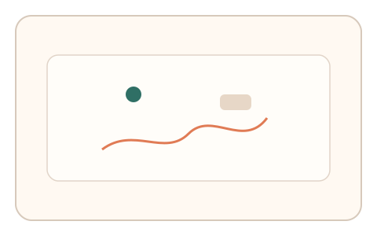
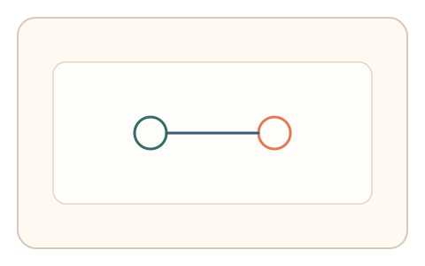
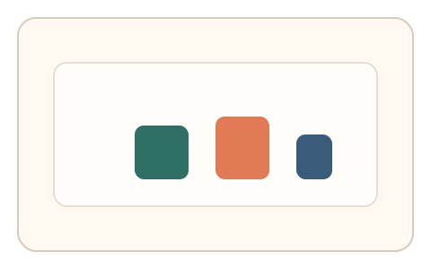

#156
Reverse Brainstorming - Round 2
已扩展
多信号耦合一致性
同时采集轨迹动力学、反应时与适应曲线，判定依赖多信号耦合结构。
概念原文
在同一任务内同时采集轨迹动力学、反应时与适应曲线，判定基于多信号的一致性相关结构而非单一统计分布。
让“单分布伪造”失效，必须同时复刻多维耦合关系。
研究背景
单一分布易被伪造，多信号间的相关结构更难复刻。耦合一致性可反映真实操控的整体模式。
核心机制
- 在同一任务内采集多维信号。
- 提取轨迹、反应时与适应曲线。
- 计算信号间相关结构。
- 以耦合一致性作为判定核心。
用户流程
- 步骤 1：用户完成多信号任务。
- 步骤 2：系统提取多维信号。
- 步骤 3：系统评估耦合一致性。
判定信号
轨迹‑反应时相关性
真实操作会呈现耦合关系。
适应曲线与纠偏一致性
多维信号同步性难以伪造。
判定逻辑
多信号相关结构需落在基线区间；单一信号异常或耦合断裂判异常。
对抗面
- 逐一拟合单信号分布
- 回放真实多信号记录
防御与缓解
- 动态参数扰动避免固定分布
- 加入额外信号提高维度
- 检查跨任务一致性
可达性与风险
确保任务负担可控并提供替代通道。
- 信号耦合过强导致误拒
- 采样不足影响相关性
可视化状态

状态 1：多信号采集
同时采集轨迹与反应时。

状态 2：耦合结构
展示信号相关结构。

状态 3：一致性判定
基于耦合关系输出判定。
参考资料
Multivariate analysis
说明多维信号相关结构。
Behavioral biometrics
说明多信号行为特征。